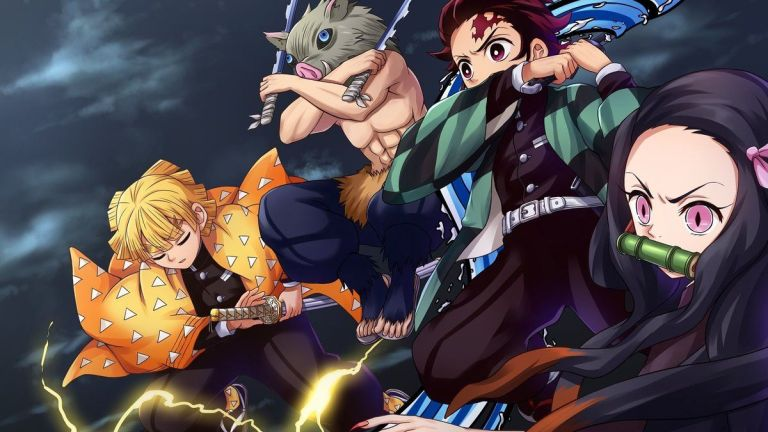
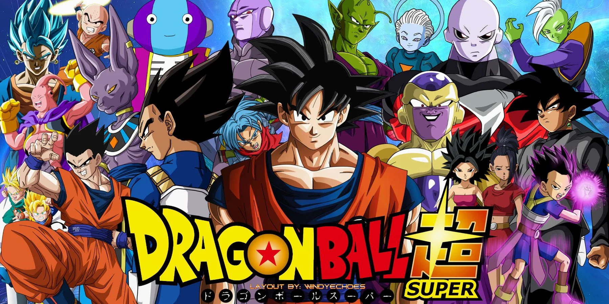

Recommended

Reviews
Demon Slayer: Kimetsu No Yaiba
A family is attacked by demons and only two memebers survived. The protagonist (Tanjiro) and his sister (Nezuko), who is slowly transforming into a demon. Tanjiro has decided to step out to become a demon slayer to avenge his family and cure his sister. Release Date: 6 Apr, 2019
Tanjiro and his group go through the usual hurdles of training and battles as they learn and refine powerful abilities. Demon Slayer doesn’t cram too much into its first season and the majority of these episodes get a chance to breathe where the characters can properly express themselves and not be rushing from one battle to the next.
Dragon Ball Super
A mere six months after the defeat of Majin Buu, The honourable Super Saiyan Son Goku decides to continue his quest to becoming stronger. Release Date: 7 Jan, 2017
Dragon Ball Super is the continuation and sequel of Dragon Ball Z. The story is quite similar to Z as we see our hero Goku progressively meeting stronger foes and the stakes becoming higher. New elements and characters are introduced such as the Gods. Something that Super has incorporated in this show that sets it apart from Z is character development. The series is also able to incorporate effective drama and genuinely hilarious comedy into its story, the most noteworthy being the action and pure fighting that is reminiscent of Dragon Ball Z.